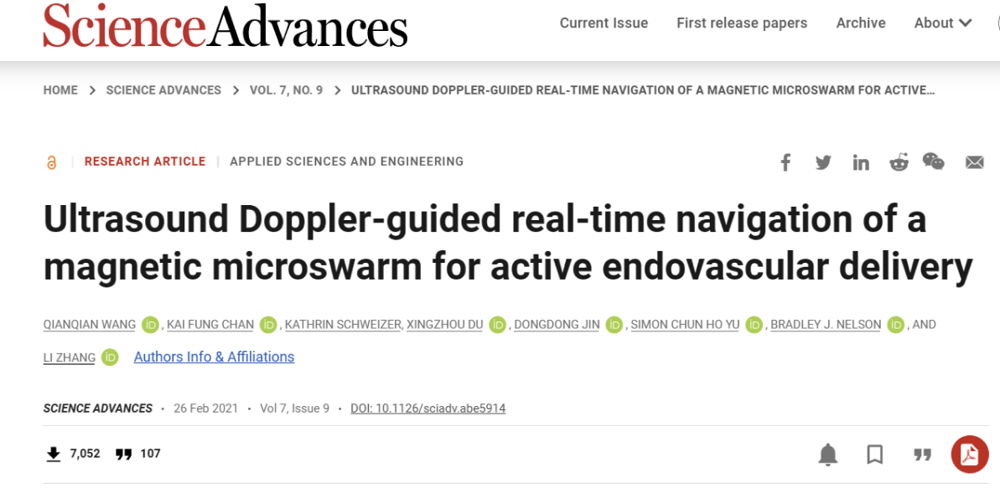

Team
Team
News
News
Research
Research
Publications
Publications
Gallery
Gallery


Introduction
News

About the lab: The Intelligent Small-scale Robotics Lab (ISSRL)
(智能小尺度机器人实验室) is directed by Prof.
Qianqian Wang (Chinese: 王乾乾). Our lab studie small-scale robotics
(小尺度机器人学), microrobotic swarm (微机器人集群系统),dynamic
self-assembly and micromanipulation (磁驱动的动态自组装及微操作). Our
lab has been sponsored by various funding bodies, inlcuding the National
Natural Science Foundation of China (国家自然科学基金委员会), Department
of Science and Technology of Jiangsu Province (江苏省科学技术厅) and
Xiaomi (小米).
[2023. 11] Dr. Wang won the "Open Science Excellent Author
Program" due to the high impact of our Advanced Intelligent Systems
article [Link], which received more than 6,000 downloads in 3 months from worldside
researchers.
[2023. 09]
王老师于2023年教师节庆祝大会作为青年教师代表发言，分享了对教育和教师使命的思考和感悟。[LInk]
[2023. 09] Our Springer book entitled Magnetic Micro and
Nanorobot Swarms: From Fundamentals to Applications is online! This book
is focused on the attractive emerging field of micro-/nanorobot swarms
(microswarms). It introduces fundamental understandings of various
microswarms and demonstrates applications of micro-/nanorobot swarms in
different fields. [Link]
[2023. 08] Dr. Wang Won the MINE Outstanding Young Scientist
Award（“MINE 2023优秀青年科学家奖”）. [Link]
[2023. 03]Our Science Advances paper "Ultrasound Doppler-guided real-time
navigation of a magnetic microswarm for active endovascular
delivery" has been highlighted as "Hot Paper" (Top
0.1%)![Link]
[2022. 11] Dr. Wang won the 1st Xiaomi Young Talents
Program（首届“小米青年学者”）[小米公益基金会] [东南大学教育基金会]。
Keyords: Small-scale Robotics (小尺度机器人学), Microrobotic swarm
(微机器人集群系统),Dynamic Self-assembly and Micromanipulation
(磁驱动的动态自组装及微操作), Magnetic control medical devices
(磁控医疗设备), Flexible Multi-modal micro-miniature Robot and Micro-nano
medical device(柔性多模态微小型机器人及微纳医疗器械).
Short biography of PI: Prof. Qianqian Wang joined Southeast University in
February 2022 and is now serving as the Young Chief Professor at the School
of Mechanical Engineering, as well as a doctoral supervisor. He was selected
for the National "Overseas High-Level Young Talents Program" and
was among the first recipients of the "Xiaomi Young Scholar" and
the "MINE Excellent Young Scientist Award." Additionally,
Professor Wang serves as an associate editor, guest editor, and reviewer for
multiple professional journals and international conferences, including the
IEEE Transactions Series and IEEE IROS.
We are creating the future here
Prof. Qianqian Wang, Intelligent Small-scale Robotics Lab, Southeast
University